2024–25 · BSc thesis · EUSS Motorsport, Formula Student
Aerodynamic package design for the EM05 Formula Student car
I designed the nosecone, underbody and side wings of the EM05 through 44 CFD-driven design iterations in Altair HyperMesh and AcuSolve. Relative to the EM03 package, the final design raised downforce (CLA) by 339.39 %, raised aerodynamic efficiency (CL/CD) by 260.59 % and moved the centre of pressure from 22 % to 41 % front, inside the target window.
- Altair HyperMesh
- Altair AcuSolve
- OptimumLap
- SolidWorks

- +260.59 % CL/CD, −0.269 → −0.970, relative to the EM03 package
- +339.39 % Downforce (CLA), −0.066 → −0.290 m², relative to the EM03 package
- 22 → 41 % Centre of pressure, % front. Target 40–49 %, CoG at 49 %
- −0.24 to −0.30 s Per lap, FS Austria endurance, OptimumLap with only CL and CD changed
Sign convention, as in the thesis: lift coefficients are negative for downforce. Percentage changes compare magnitudes. Coefficients use the 0.834 m² frontal area.
01Problem and requirements
EUSS Motorsport's first electric car, the EM-04, competed at Formula Student Spain 2024 but did not pass scrutineering. The switch from combustion to an electric powertrain had taken the budget for three seasons, so the aerodynamic package had not been developed in that time: the EM-04 still ran the EM03 package. A generational change in the team had also left a gap in aerodynamics knowledge. For 2024–25 the aerodynamics department was reinstated, and I took on the complete package for the EM05 as my BSc thesis. It was the first thesis in the team's history to cover the full package rather than individual parts.
The team's season goals set the brief. The first was to pass mechanical and electrical scrutineering, which includes the rain test, so the bodywork had to keep water out of the car. The second was to raise the engineering design event score towards a 75-point goal.
Constraints
| Constraint | Source | Effect on the design |
|---|---|---|
| Aerodynamic device and bodywork rules | FSG 2025 v1.1, T2 and T8 | Bounded where the nose, floor and side wings could sit |
| Minimum static ground clearance 30 mm | FSG 2025 T2.2.1 | Set the lowest point of the floor and diffuser |
| Edge radii ≥ 3 mm forward-facing, ≥ 1 mm elsewhere | FSG 2025 T2.4.1 | Applies to the underbody inlet (see limitations) |
| Rain test | Scrutineering | Bodywork must seal the car's components |
| Chassis geometry | Frame department | Defined the available volumes. Capped the floor angle at 2° and the diffuser at 20° |
| Radiator location | Mechanical Systems department | Cooling layout studied with them before concept work |
| No front or rear wings this season | Team decision | Wings add design, simulation and manufacturing complexity without serving the season goals. Package limited to nose, underbody and side wings |
Performance targets
Teams that publish their coefficients mostly run packages refined over many seasons, so they were not a fair reference for the team's second package. I set the targets from Oxyzoglou's study of what each level of package complexity achieves on a Formula Student car, taking the "underbody channels" configuration, the closest match to a package without wings.
For the centre of pressure, the Frame department placed the centre of gravity at 49 % front. Drivers had repeatedly reported understeer, and a rearward CoP adds understeer, so I aimed to keep the CoP behind the CoG for high-speed stability but as close to it as possible.
| Target | CLA [m²] | CDA [m²] | CL/CD [–] | CoP [% front] |
|---|---|---|---|---|
| EM05 | −0.329 | 0.271 | −1.215 | 40–49 |
02CFD method and set-up
I picked the simulation speed from an OptimumLap run of the EM03 on the Formula Student Austria endurance track. Its average speed, 51.08 km/h (14.2 m/s), represents the car's normal operating point (lowest 20.03 km/h, highest 87.42 km/h). With the car length as the reference length, the flow is fully turbulent:
I then built a baseline mesh on the EM03 and used it to fix the turbulence model, the prism layers and the mesh density before any design work (see validation). The settings below are the ones used for all design iterations.
| Item | Setting |
|---|---|
| Software | Altair HyperMesh (meshing), AcuSolve (solver) |
| Turbulence model | Realizable k-ε (RANS), selected over k-ω SST |
| Inflow | 14.2 m/s |
| Domain | Inlet 9 m upstream, outlet 30 m downstream, 6 m high, 6 m to the side (car length 3.33 m) |
| Surface mesh | Wheels 18 mm, suspension 5 mm, chassis 9 mm |
| Volume refinement | Geometry box 23 mm, wake box 113 mm, far field 270 mm |
| Prism layers | 25 layers, growth ratio 1.30, target y+ 0.5 (mean output y+ 0.89), truncate policy at sharp corners |
| Mesh size | ≈ 5.7 million nodes, ≈ 10 h per run |
| Convergence | Residuals to 10−2.5 (AcuSolve L1 norm, roughly 10−3 in L2 terms), relaxation factor 0.25, 300 iterations, monitors on pressure drag, friction drag, inlet pressure and lift, flow-pattern check on every run |
| Reference area | 0.834 m² frontal area, from CAD |
Sizing the first prism layer
I sized the inflation layers by hand from flat-plate correlations, then checked the total layer height in the mesh against the boundary-layer thickness. For y+ = 1 and 25 layers, using Schlichting's skin-friction correlation and the 1/7th-power-law boundary layer:
The y+ study in section 07 then moved the target to 0.5 with a growth ratio of 1.30.
03Baseline: the EM03 package
With the method fixed, I analysed the EM03 package, which the EM-04 had carried over. It produced CLA −0.066 m², CDA 0.245 m², CL/CD −0.269 and a centre of pressure at only 22 % front. Three problems stood out.
- The nose made lift. Its concave lower surface sat under the stagnation point and created a high-pressure region whose resultant pointed up and back. The nose produced +6.0 N of lift while the whole car made only 8.0 N of downforce at 14.2 m/s, and it pulled the CoP rearward.
- The diffuser lost energy. Total-pressure plots showed a large loss under the diffuser and negative wall shear stress revealed separated flow, so the device barely worked.
- The sidepods starved the radiators. The radiators sat in low-energy air from the sidepods. A run with the sidepods removed raised CL/CD by 73.61 % (−0.269 → −0.467) with almost no drag change.
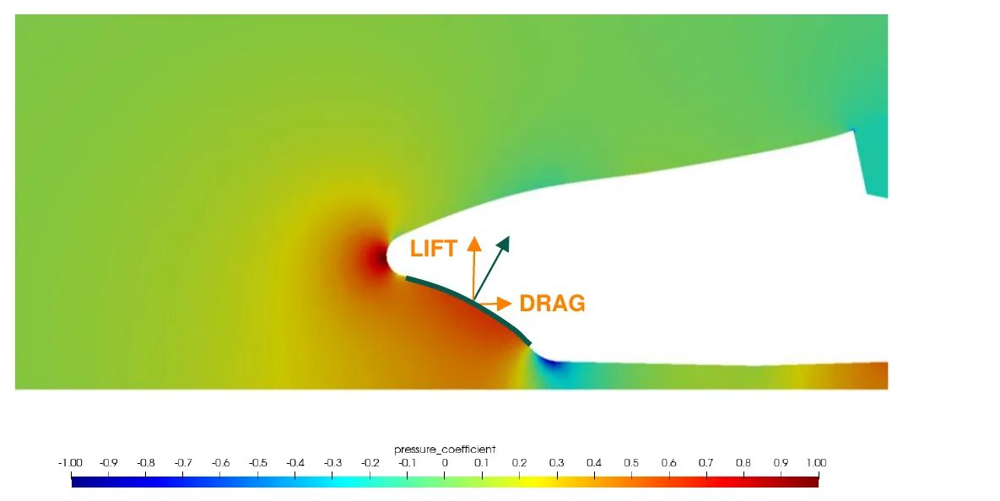
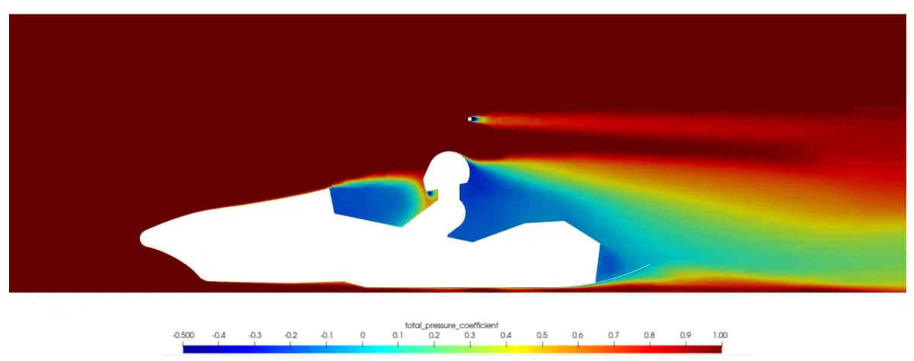
This gave three design goals: a nose that stops making lift, a diffuser that keeps its flow energised, and a CoP moved forward towards the CoG.
04Concept and alternatives
Front and rear wings were ruled out at the start to contain cost and complexity. Cooling openings for the battery were discussed with the Electrical Systems department, but the EM-04 had never completed a cooling test, so there was no data to size the airflow and the openings could not be justified.
I sketched several concepts on paper and reviewed them with the alumni who had designed the previous package. Only the most promising one went to CAD, so the thesis goal of three CAD design philosophies was not met. Instead, the large changes were settled at the concept stage. The chosen concept has a new nosecone, an underbody with an angled floor and a diffuser, and side wings in place of the sidepods. The side wings were shaped to outwash the front-tyre wake away from the underbody.
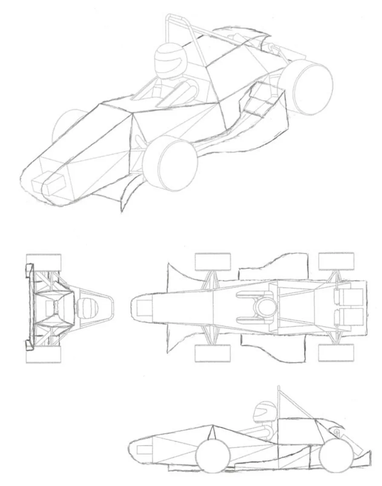
05Iteration and decision log
The design phase ran to 44 iterations. Including the set-up studies, the project used 82 simulations, 1,487.2 h of elapsed time, 18,701 CPU-hours and 352 GB of results. Each study below is compared against its own baseline, so the values do not chain exactly from one row to the next.
| Study | Variants | Result | Decision |
|---|---|---|---|
| Nose height | 410 / 305 / 190 mm | Full-car CLA −0.060 → −0.070 m² (+16.48 %). Nose lift CLA 0.013 → 0.003 m² (−71.39 %) | Low nose, 190 mm |
| Floor angle | 0° / 1° / 2° (2° = chassis limit) | Full-car CL/CD −0.051 / −0.145 / −0.188 | 2° |
| Underbody inlet | Straight / medium / open | Full-car CLA −0.068 / +0.144 / +0.189 m². High-pressure region at the wider inlets | Straight inlet kept |
| Diffuser angle | 5° / 15° / 20° | Full-car CL/CD −0.188 / −0.266 / −0.217. Total-pressure loss grew with angle | 15°, then strakes |
| Strakes | None → 2 at 180 mm → 2 at 240 mm → 4, then 4 with a 20° diffuser | Full-car CL/CD −0.266 (none) → −0.707 (4 strakes, 15°) and −0.723 (4 strakes, 20°) | Four strakes |
| Vortex tunnel | Tunnel at the side-wing edge | Full-car CL/CD −0.707 → −0.630 (−10.89 %) | Rejected |
| Side-wing fence | Fence under the side wing | Full-car CL/CD −0.630 → −0.598 (−5.08 %). Placed where pressure was already low | Rejected |
| Flap 1 (lower) | Shortlist N22, RAE 100, NACA 6412, NACA 4412, S4083. Gap 15/20 mm, overlap 0/10 mm, AoA 5/10/15° | Full-car CL/CD −0.782 at 15 mm gap, 10 mm overlap, 5° | NACA 6412 |
| Flap 2 (upper) | Shortlist MH115, GOE225, S1210, S1223, E216. Gap 10/15/20 mm, overlap 0/10/20 mm, AoA 10–25° | Full-car CL/CD −0.859 at 10 mm gap, 20 mm overlap, 20°. S1223 made more downforce but at lower efficiency | S1210 |
| Side-wing floor AoA | 5° / 10° / 15° | Full-car CL/CD −0.859 / −0.781 / −0.970. Rear-wheel CDA 0.014 → 0.001 m² (−92.86 %) | 15° |
| Endplates | Small / medium / large | Full-car CL/CD −0.816 / −0.859 / −0.805. Small: stronger tip vortex. Large: recirculation | Medium |
Nose: removing the lift
Other teams' cars showed no clear trend between high and low noses. A high nose should send more air under the floor, but the inclined surface under its stagnation region pushes upwards. I simulated the highest and lowest positions possible, plus a middle one. The 190 mm nose cut the nose's own lift by 71.39 % and raised full-car downforce by 16.48 %, while underbody downforce changed little (CLA −0.199 → −0.206 m²). The nose redesign is the main reason the centre of pressure moved forward.
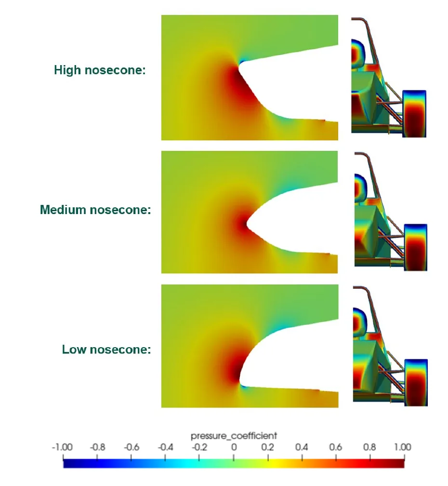
Diffuser and strakes: keeping the flow energised
A steeper diffuser shrinks the low-pressure wake behind the car, and efficiency rose up to 15°. The total-pressure plots, however, showed the flow losing more energy as the angle grew. A stream of water over a spoon behaves the same way. At a shallow angle the stream expands evenly. At a steep angle it stays attached, but it loses energy following the curved surface and a low-pressure region forms in the upper part of the stream. Strakes were the fix. Air that meets the stagnation point on the rear tyre enters the underbody and forms vortices that travel along the diffuser. With four strakes, the flow under a 15° diffuser kept its energy, returning to the even "shallow angle" case of the experiment without reducing the angle. Full-car CL/CD rose from −0.266 to −0.707.
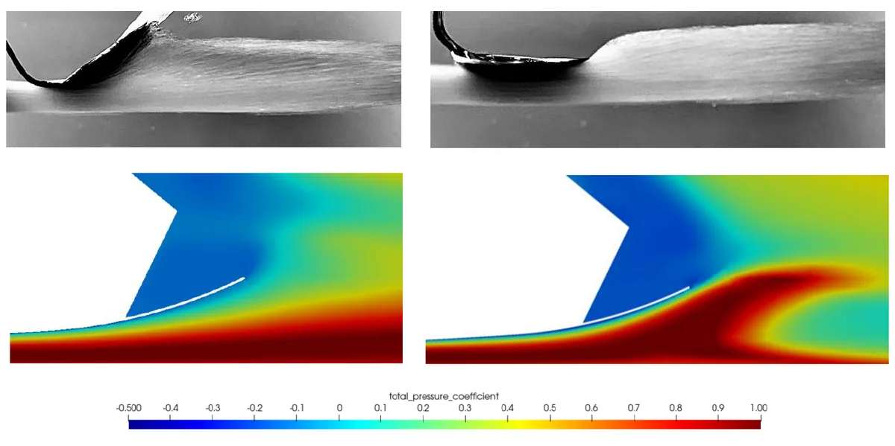
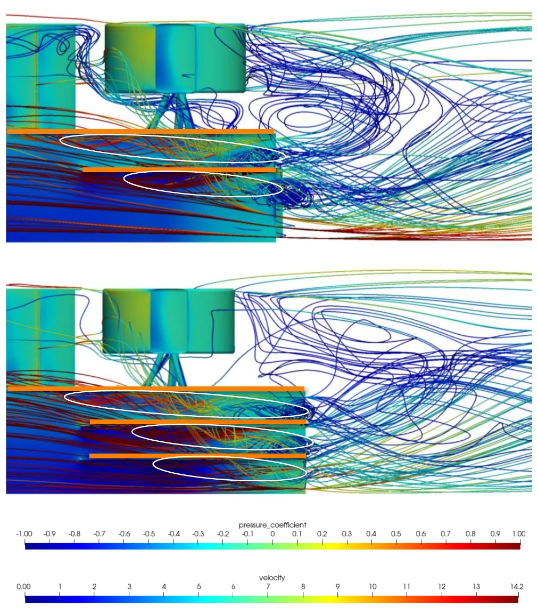
Side wings: outwash and the flap cascade
The side wing's curved leading section pushes the front-tyre wake outboard, away from the underbody and the flaps ahead of the rear wheel. I selected each flap from a five-airfoil shortlist by its lift, drag and efficiency curves over the expected angle-of-attack range, then iterated gap, overlap and angle of attack in CFD. The largest single gain came from the floor angle of attack under the side wing: at 15°, the flow no longer stagnated directly on the rear tyre, rear-wheel CDA fell from 0.014 to 0.001 m² and full-car CL/CD reached −0.970.
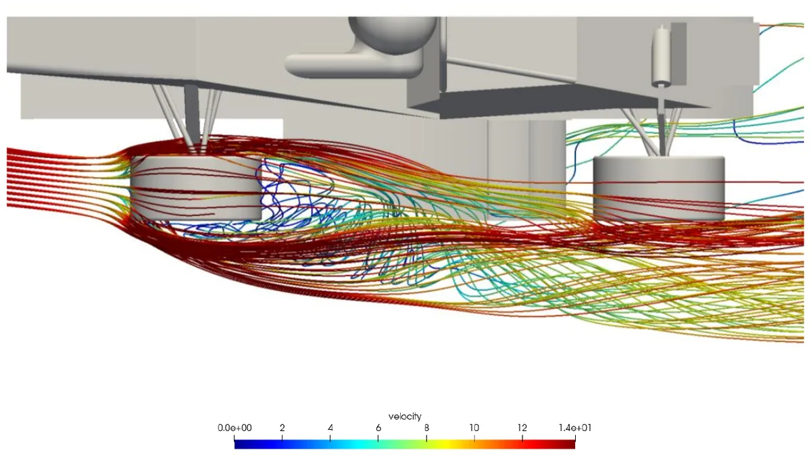
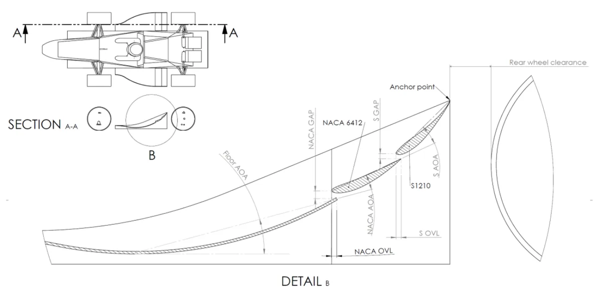
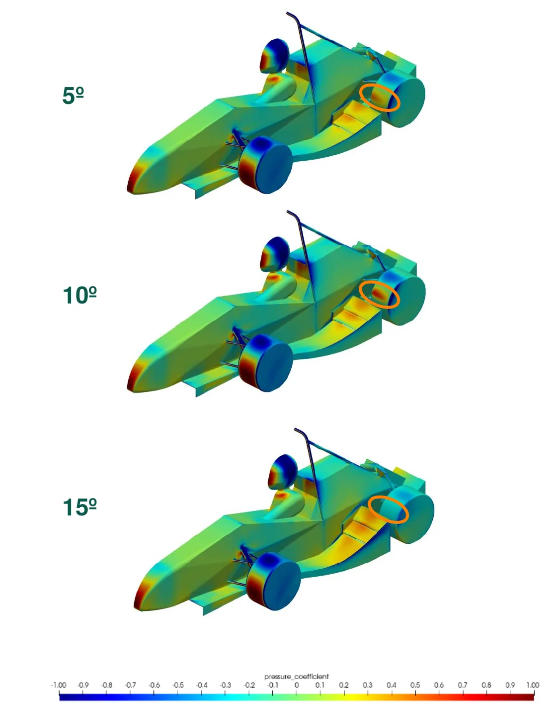
06Results
| Configuration | CLA [m²] | CDA [m²] | CL/CD [–] | CoP [% front] |
|---|---|---|---|---|
| EM03 package | −0.066 | 0.245 | −0.269 | 22 |
| EM05 target | −0.329 | 0.271 | −1.215 | 40–49 |
| EM05 first iteration | −0.038 | 0.273 | −0.139 | 43 |
| EM05 final | −0.290 | 0.300 | −0.970 | 41 |
| Final vs EM03 | +339.39 % | +22.45 % | +260.59 % | +19 points |
| Final vs target | −11.85 % | +10.70 % | 79.84 % of target | In range |
The final package fell short of the downforce and efficiency targets and exceeded the drag target by 10.70 %. It did put the centre of pressure inside the 40–49 % window, mainly through the nose redesign. The underbody remained the main downforce generator, and replacing the sidepods with side wings was one of the largest contributors to the overall gain.
Lap-time and points estimate
I ran the EM03 OptimumLap model on the FS Austria endurance track twice, changing only the lift and drag coefficients. Within the software's ±10 % margin, the EM05 package is worth 0.243 to 0.297 s per lap, or 4.1 to 5.0 s over the 17 laps of the 22 km endurance. The difference shows mostly in high-speed corners. Using the FSG endurance scoring formula with no penalties, that is worth 2.11 to 2.58 points out of 250:
07Validation
Convergence
I judged convergence on three criteria: residuals, force monitors and flow patterns. AcuSolve reports an L1-norm residual, so I set a 10−2.5 target, roughly equivalent to the usual 10−3 in L2 terms. With a relaxation factor of 0.6 the downforce history oscillated. Reducing it to 0.25 smoothed the history, and downforce stabilised at about 130 of the 300 iterations.
Turbulence model
The literature review showed k-ω SST and realizable k-ε as the two models most used for Formula Student cars, with SST the more complete. I ran both on the EM03 for 300 iterations.
| Model | Elapsed [h] | CDA [m²] | CLA [m²] |
|---|---|---|---|
| k-ω SST | 4.72 | 0.289 | −0.055 |
| Realizable k-ε | 4.36 | 0.265 | −0.066 |
Neither model brought the turbulent kinetic energy residual below tolerance in 300 iterations. Realizable k-ε was 7.63 % faster, a saving that matters more as the mesh grows. With time as the main constraint I chose k-ε, accepting lower model fidelity in exchange for more design iterations. The two models disagree by about 9 % on drag, which bounds how far the absolute coefficients can be trusted.
Wall resolution (y+)
| Target y+ | Layers | Growth | Nodes | Elapsed [h] | Mean output y+ |
|---|---|---|---|---|---|
| 1 | 25 | 1.26 | 1.068 M | 2.68 | 1.73 |
| 0.75 | 25 | 1.27 | 1.086 M | 2.63 | 1.30 |
| 0.5 | 25 | 1.30 | 1.072 M | 2.85 | 0.89 |
Computational cost only rose noticeably when the number of layers increased, but layers were needed to keep the growth ratio inside the recommended 1.05–1.3 range. With a 0.5 target the whole car sits inside the viscous sublayer (y+ < 5) and the main downforce surfaces are fully resolved (y+ < 1). For the hand-calculated y+ = 1 set-up, the prism-layer height measured in the mesh matched δ99 within acceptable accuracy.
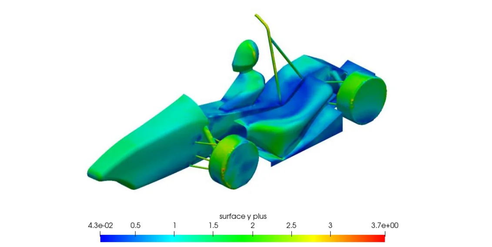
Mesh sensitivity
I refined the mesh from about 1 million to about 10 million nodes and tracked the change in each coefficient relative to the previous refinement:
The lift error fell overall but rose again between 8 and 10 million nodes, and the drag error showed no clear trend. The solution is therefore not mesh-independent. A 10-million-node run took about 53 h on the laptop, so I selected the ≈ 5.7-million-node mesh (≈ 10 h per run) as the finest a 44-iteration programme could afford, and used it for every design comparison. At that mesh, about 0.1 % of elements failed the equiangle-skewness threshold and about 0.6 % failed the volumetric-skewness threshold.
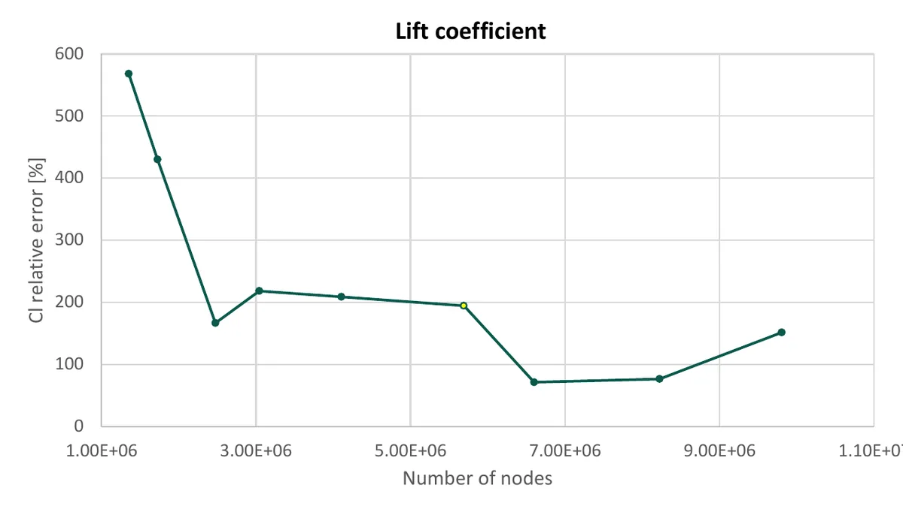
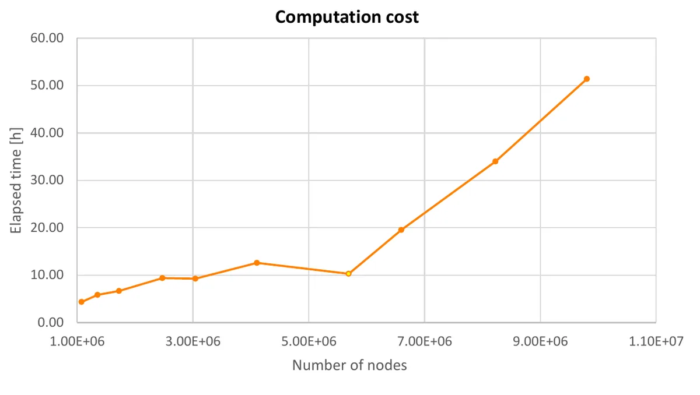
The results are CFD-only. Correlation with wind-tunnel or on-track measurements was not part of the project, so the coefficients are best read as comparisons between designs on one fixed set-up, not as absolute values.
08Limitations and next steps
- One operating point. Every run was straight-line at a constant speed and ride height. Ride height changes through a lap with aero load and track irregularities, so the next step is ride-height sensitivity curves and aero maps, aiming for a wide, smooth operating window rather than peak downforce.
- Mesh and model uncertainty. The mesh is not fully independent and the turbulence model was chosen for cost. A finer mesh and an SST run on the final design would bound the error on the absolute numbers.
- Manual post-processing. Extracting coefficients surface by surface was repetitive. A script that outputs the coefficients for every surface would free time for more designs.
- Underbody inlet. Wall shear stress shows recirculation at the outer part of the inlet. The 1 mm minimum edge radius required by the rules was not modelled, and including it should reduce the separation.
- Side wing. Some of the front-tyre wake is still drawn in under the outermost section of the side wing, and the outer endplate sheds a strong tip vortex that adds drag. The vortex tunnel did not help in its first form but deserves more development.
- Project goals. Frame supply delays pushed the team's manufacturing start back. That gave more time for iteration but moved the thesis from the third to the fourth submission window, and only one design philosophy reached CAD instead of three.
09Role, team and tools
This was my individual BSc thesis, written while I led the reinstated aerodynamics department. I defined the CFD process, ran the 82 simulations, iterated the design and analysed the results. The chassis and CoG came from the Frame department, the radiator layout was studied with Mechanical Systems, and battery cooling was discussed with Electrical Systems. The alumni who designed the previous package reviewed the concepts, and the team's sponsors advised on composite design and processes for the manufacturing phase that followed.
Tools: Altair HyperMesh, Altair AcuSolve, OptimumLap, SolidWorks.
Source: P. Lacasta Sauret, Development of the aerodynamic package of a Formula Student vehicle, BSc thesis, EUSS, 2025. All figures are reproduced from the thesis.